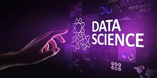
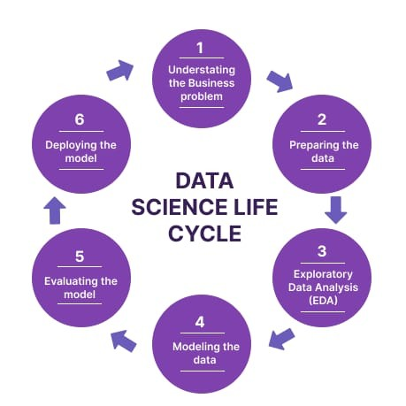
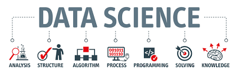

LA DATA SCIENCE C'EST QUOI ?
Définition :
La Data Science est un domaine interdisciplinaire qui combine mathématiques, statistiques, informatique et communication
pour extraire des informations exploitables à partir de données brutes. Elle inclut la collecte, le nettoyage, l’analyse, la modélisation et la visualisation des données afin de prendre des décisions éclairées.
OBJECTIF:
- Transformer des masses de données en connaissances utiles, identifier des tendances,
résoudre des problèmes complexes et prédire des événements futurs.
Processus clé :
- Collecte des données – à partir de bases internes, d’Internet, de capteurs IoT, etc.
- Analyse exploratoire – comprendre les données et identifier des tendances.
- Ingénierie des fonctionnalités – transformer les données pour les rendre exploitables.
- Modélisation – créer des modèles prédictifs avec Machine Learning et Deep Learning.
- Évaluation et optimisation – tester et améliorer les modèles.
- Déploiement – appliquer les modèles dans les systèmes pour des décisions en temps réel.
Outils principaux
- Langages de programmation : Python, R
-
Bases de données : SQL, Hadoop, systèmes distribués
- Visualisation : Tableau, Power BI
- Machine Learning & Deep Learning : scikit-learn, TensorFlow, PyTorch
Métiers liés:
- Data Scientist : crée et optimise des modèles, analyse des données et communique les résultats.
- Data Analyst : collecte, nettoie et visualise les données.
- Machine Learning / Deep Learning Engineer : développe des modèles prédictifs et des réseaux de neurones.
- LLM Engineer : crée des modèles de langage pour l’IA.
- Research Scientist : recherche et développe de nouvelles méthodes en IA et Data Science.
Applications :
- Finance : prévision des ventes, détection de fraude, gestion des risques.
- Santé : analyse médicale et génomique, suivi des épidémies.
- Marketing : ciblage des consommateurs, analyse du comportement.
- Transport : optimisation des itinéraires, prédiction des retards.
- Environnement : suivi climatique et prévisions environnementales.
Importance :
La Data Science permet aux entreprises et organisations de prendre des décisions basées sur des données réelles, d’anticiper les tendances et de créer de la valeur à partir du Big Data.


.jpg)
